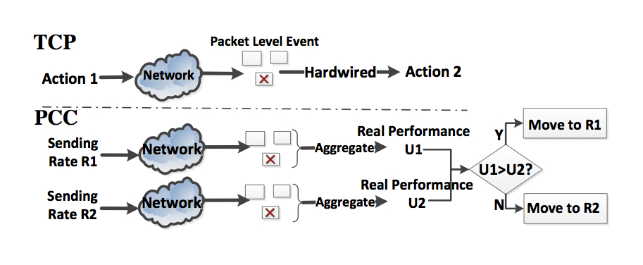

PCC Overview
Over years, TCP becomes notorious for degraded data delivery performance. Great efforts has been poured to proposing TCP modifications, which essentially ``patch'' for performance problems in specific network conditions. Unfortunately, the very fact that there are so many TCP variants suggests that each is only a point solution and worse, in many cases the performance of these special TCP variants is still quite far from optimal. TCP fails to achieve consistent high performance due to a fundamental architectural deficiency: hard-wiring packet-level events to control responses with often-invalid assumptions about the network and without understanding its control actions impact on meaningful performance.
 Comparison between TCP and PCC architectureWe propose Performance-oriented Congestion Control (PCC), a new congestion control architecture in which each sender continuously observes meaningful performance and compares different sending rates’ resulting utility and learns how to adjust its rate to improve empirical utility through a learning control algorithm. By avoiding any assumptions about the underlying potentially-complex network, PCC tracks the empirically optimal sending rate and thus achieves consistent high performance. PCC shows consistent and often 10× performance improvement, with better fairness and stability than TCP. Moreover, PCC provides a flexibility beyond TCP’s architecture: expressing different objectives of data transfer, e.g. throughput/latency, with different utility functions. PCC requires no router hardware support or new packet format to deploy.
High Perforamance Out of Box
Big Data Delivery Over Internet
Based on our large-scale experiment over the global commercial Internet, PCC can beat TCP CUBIC(default in linux kernel), by more than 10X on 44% of the tested sending receiving pairs.
 The scale of our global Internet experiments and the improvement of PCC over TCP CUBIC
The scale of our global Internet experiments and the improvement of PCC over TCP CUBIC
We use several representative samples to compare how long does it take to deliver 100GB of data when using PCC, TCP or just buy a flight ticket.

Huge Data Delivery over Dedicated Network
Have Huge Data(10TB/delivery)? Own a fast network? Can provision dedicated network capacity? Don’t waste your capacity! To test this scenario, we provisioned multiple fully dedicated 800Mbps links across GENI Internet2 backbone. Here is the time comparison to delivery 10TB data.

Satellite Internet
On an emulated WINDS satellite Internet connection based on real-world measurement, here is what PCC and TCP Hybla takes to deliver 1G data.

Rapidly Changing Networks
We test TCP and PCC on a network path where available bandwidth, loss rate and RTT, are all changing every 5 seconds, with bandwidth ranging from 10Mbps to 100Mbps, latency from 10ms to 100ms and loss rate from 0% to 1%. Comapring to TCP variants, PCC tracks the optimal rate closely.
 PCC tracks optimal rate closely
PCC tracks optimal rate closely
Stable Convergence and Fairness
PCC’s control algorithm is selfish in nature. Surprisingly, it can achieve fairness and much more stable convergence than TCP. The following is a typical dumbbell topology convergence experiment, 100Mbps, 30ms latency bottleneck. Four flow sequentially come in with 500s interval. Each flow sends for 2000s.
PCC converges to fairness point stably

TCP shows very unstable behavior and high rate variance

Potential of Flexibility
PCC has a feature outside the scope of the TCP family: PCC can explicitly express heterogenous data delivery objectives just by plugging in different utility functions, without the need for complex AQM mechanism, which is necessary to cater to different applications’ objective when using TCP. For example, “Bufferbloat + FQ + TCP” is better for throughput-hungry applications but “Codel + FQ + TCP” is much better for latency-sensitive interactive applications that have the objective of maximizing its throughput-delay ratio, called the power. To make our point, we take this scenario and show with PCC and a latency sensitive utility function, “Bufferbloat + FQ” and “Codel + FQ” render no power difference for interactive flows and with either, PCC achieves higher power than “TCP + Codel + FQ”.